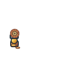

Контактный лист · 128 × 128 SVG · все изображения самостоятельные, фон прозрачный. Накладки вторичных веток сохраняют силуэт главного пути.

Накладки: a1/a2-overlay, b1/b2-overlay, c1/c2-overlay. При равных уровнях основной путь определяется индексом ветки; после T3 остаётся неизменным.